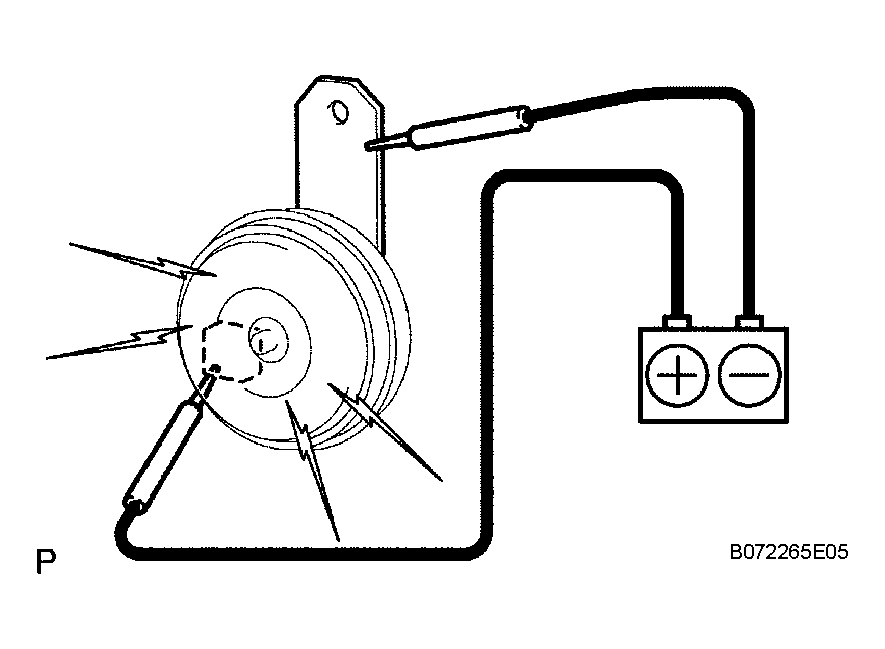

High Pitched Horn: Inspection
Fig 1: Applying Battery Voltage To Horn And Checking Operation Of Horn

Courtesy of © TOYOTA, LICENSE AGREEMENT TMS1002
INSPECT HIGH PITCHED HORN
Apply battery voltage to the horn and check the operation of the horn.
OK :
MEASURING AND SPECIFIED CONDITION CHART
Measurement Condition
Specified Condition
Battery positive (+) --> Terminal 1
Horn sounds
Battery negative (-) --> Horn bracket
If the result is not as specified, replace the horn.